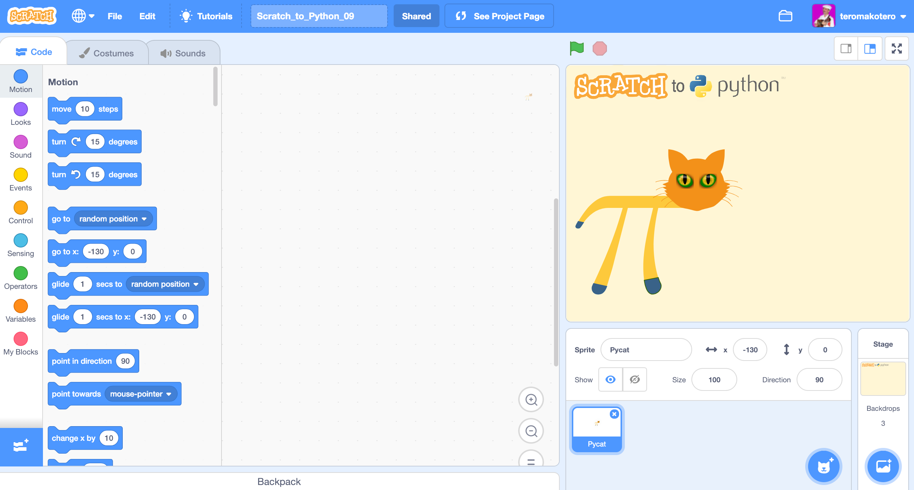
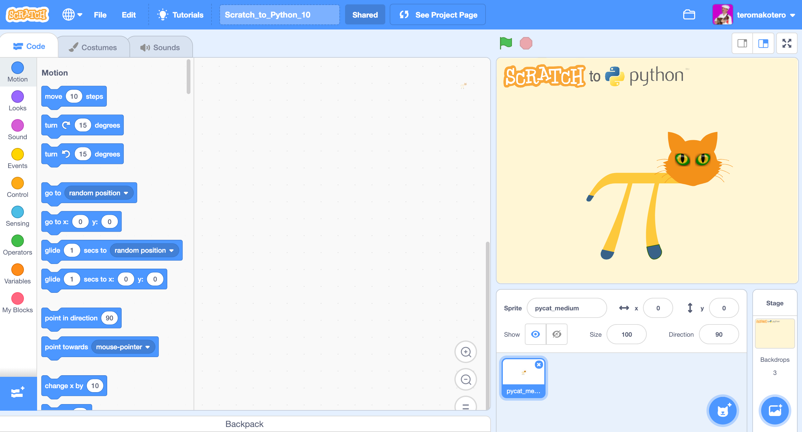
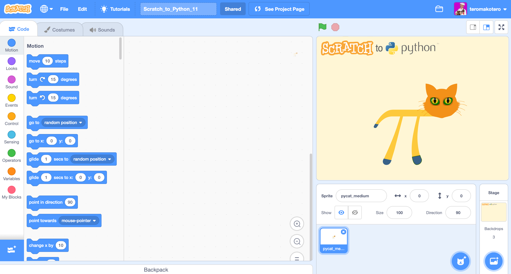

Variable Challenges
Scratch_to_Python_09
In this challenge you will create a program that counts Pycat's steps and shows them on stage. In this challenge you can take advantage of Challenge_04 to make an animation where the Sprite walks.
In this challenge, we use the Player Learning method. You can come up with a solution through trials and mistakes. The method of trial and error is the basic method of solving a problem.
Instructions
- Create the variable for step
- Animate Pycat so it walks
- Let the program calculate and display the Pycat steps.
- Click spacebar to get Pycat back to its starting position.
Challenge 09
You come to the challenge either by clicking on the heading "Challenge 09" or on the picture of the challenge.
 Link to challenge Scratch_to_Python_09 file.Video showing the solution to the Scratch_to_Python_09 challenge
Scratch_to_Python_10
In this challenge you will learn to make a calculator that uses addition, subtraction, multiplication and division according to the user's choice. The user first selects the count method (+, -, * or /). Then he gives numbers 1 and 2 for which the calculation is performed.
In this challenge, we use the Player Learning method. The feeling of frustration and irritation is an important part of the learning process.
Instructions
- Make three variables: "calculation", "number1" and "number2".
- Three "aks and wait" blocks are needed. You can find them in the Sensing Blocks.
- Use Conditional Blocks and set the calculation method chosen by the user (+, -, * or /) to the value of the variables.
- Ask the user to enter the first and second numbers with the "ask and wait" blocks and place the values in corresponding variables.
- With the help of conditional sets, you set the program to perform the calculation and enter it in the block "say" that is in the Looks Blocks.
Challenge 10
You come to the challenge either by clicking on the heading "Challenge 10" or on the picture of the challenge.
 Link to challenge Scratch_to_Python_10 file.Video showing the solution to the Scratch_to_Python_10 challenge
Scratch_to_Python_11
In this challenge, you create a program that allows you to practice a binary number system. The program displays a number in the binary number system to the user and the user must enter the corresponding number in the decimal system. The program tells you if the answer was correct and gives the correct result if it was wrong.
In this challenge, we use the Player Learning method. The feeling of frustration and irritation is an important part of the learning process.
The binary number system has a base number of 2. Therefore, only two digits (0 and 1) are used to present numbers. The table below shows the number in the binary number system and the corresponding number in the decimal system. Only the numbers needed in this challenge are displayed.
Numbers in the binary number system used in Challenge 11 and corresponding numbers in the decimal system
| Binary system | Decimal system |
|---|---|
| 0000 | 0 |
| 0001 | 1 |
| 0010 | 2 |
| 0011 | 3 |
| 0100 | 4 |
| 0101 | 5 |
| 0110 | 6 |
| 0111 | 7 |
| 1000 | 8 |
| 1001 | 9 |
| 1010 | 10 |
| 1011 | 11 |
| 1100 | 12 |
| 1101 | 13 |
| 1110 | 14 |
| 1111 | 15 |
Instructions
- Make four variables (1, 2, 4 and 8). Variable names describe powers of two (2 0 is 1, 2 1 is 2, 2 2 is 4 and 2 3 is 8. With this information, the binary number system can convert the decimal number system to a number by multiplying the power by either one or zero and adding them. For example, 0010 would be 0 * 2 3 + 0 * 2 2 + 1 * 2 1 + 0 * 2 0 , that is, 2.
- Set the variables to either the value 0 or 1 using the "pick random" block in the Operators Blocks.
- In the block "ask and wait" in the Sensing Blocks, you add "join" blocks (several are needed) to show the random values of the variables for the user (one should consider in which order the variables are placed).
- Using the condition statement, the user is informed with the block "say for two second" from the Looks Blocks if the answer was correct. If not, give the correct answer to the user.
Challenge 11
You come to the challenge either by clicking on the heading "Challenge 11" or on the picture of the challenge.
 Link to challenge Scratch_to_Python_11 file.